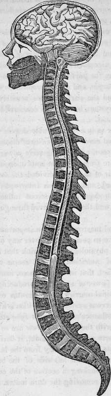

The Spinal Marrow And Its Functions. Continued
Description
This section is from the book "Human Physiology For The Use Of Elementary Schools", by Charles Alfred Lee. Also available from Amazon: Human Physiology, for the Use of Elementary Schools.
The Spinal Marrow And Its Functions. Continued
8. The spinal cord then serves to connect the brain, which is the common centre of sensation and voluntary motion, with all the sensible parts of the body, and with the muscles, the instruments of motion. We may view it in this sense, as forming a channel of communication for a bundle of nerves running from the brain to every part of the system to carry messages from the will, and to transmit intelligence back again, as if all the roads and high ways in the country should terminate in one grand post road, connecting them with the seat of government.
9. To illustrate, suppose I seize a hot iron in my hand, not knowing it to be heated ; the painful impression is immediately transmitted along the sensiferous nerves to the spinal cord, and through that to the brain. The brain takes cognizance of it, and a mental determination is immediately formed to drop the iron. The will sends back its command through the anterior column of the spinal cord to the motific nerves, distributed to the muscles, which go to the hand. The muscles instantly obey ; the iron drops, and the whole process occupies but an instant. Thus we have two channels of nervous influence ; the one transmitting intelligence to the mind, the other conveying the purposes of the will to the muscles necessary to carry them into effect.
10. That such is the chief function of the spinal marrow, is proved by the well known fact, that if it is divided in any part of its course, that portion of the body, as well as the limbs, which are situated below the seat of the injury, will be paralyzed ; that is, all sense and motion will be lost, while the parts above the injury will be unaffected. If the injury occur very high up in the neck instant death will ensue, because the nerves, which go the diaphragm and are necessary to carry on breathing, are separated from their connection with the brain. These leave the spine as high as the third vertebra of the neck.
11. I have stated that it has been proved, that the principle of motion resides to some extent in the spinal marrow itself. This is shown by the following experiment. If after the spinal cord be divided in the neck, and then lower down in the back, we irritate any of the muscles which are supplied with nerves from this isolated segment, motion will be produced. If the foot, or the hand be pricked, it will immediately contract; and this contraction is produced by the irritation being transmitted to that portion of the spinal marrow, from whence the nerves of the part arise, and whose connection with the brain has been severed, and then an impulse is sent back again from this portion to the muscles of the hand or foot which causes them to contract. Still, all voluntary motion, as well as sensation, depend on the brain.
12. If the medulla oblongata is injured, breathing immediately ceases. If the spinal marrow is severed opposite the second bone of the neck, death also speedily follows ; because the nerves of respiration are cut off' from their connection with the part above. If the spinal cord be divided, as low as the fifth cervical bone, then life will not be immediately destroyed ; but the breathing will be difficult; because the diaphragm is paralyzed, and death sooner or later follows from suffocation. If it be divided about the first dorsal vertebra, then life may be maintained for a considerable time, although the ribs cannot be elevated, as the intercostal muscles are rendered paralytic. Breathing is, however, kept up by the action of the diaphragm. I have seen a man whose spine was dislocated in this region, live seven or eight weeks. All sensation and motion were lost in the parts below the seat of the injury, but his reason and senses were perfect.
13. As the heart, lungs, larynx, and many of the most important organs of the body are supplied with nervous influence by the eighth pair of nerves, or par vagum,, why is it that a division of the spinal marrow causes death ? This question is easily answered, by remembering that one of the functions of the par vagum is, to convey to the brain the sense of the want of air, or of respiration, and that this stimulus reacts upon those parts of the spinal cord which give rise to the respiratory nerves of the chest. Now if this communication be cut off, the influence of the brain, or the me dulla oblongata, cannot be transmitted so as to excite those muscles which are employed in breathing.
14. That this is the true answer to the above question is also shown by dividing the par vagum in the neck. This causes palsy of the lungs, and also of the muscles which open the larynx ; in consequence of which, the top of the windpipe is immediately closed,and death follows from suffocation. Besides this, it also prevents transmitting to the medulla oblongata, the sense of the want of respiration, and thus prevents also the reaction of this part upon the spinal marrow.
15. Does the spinal marrow exert any influence upon the circulation of the blood ? It is ascertained that the action of the heart is nearly independent of the spinal marrow. Its nervous influence is derived from the par vagum and the great sympathetic nerve, the former of which has but little connection with the spinal cord. The whole spinal marrow has been removed, and still the heart has continued to act.
Its action, however in such cases is much weakened. That the heart is, however, in some measure influenced by the spinal innervation, must be admitted.
_16. What is called the capillary circulation, or that in the small vessels, is much under the influence of the spinal marrow. It is found that when any part of it is destroyed, the blood does not circulate in the small vessels which derive their nerves from the portion destroyed. In these cases, the skin becomes purple, and dry ; perspiration ceases, the cuticle peels off, and the part becomes sensibly colder. The whole nervous system, however, is concerned in the production of animal heat.
17. Digestion is to a considerable degree under the influence of the spinal cord. In all cases of diseases of the spine, the appetite is poor, and the digestive powers weak. Colic and dyspepsia are frequent attendants upon such complaints. If the eighth pair of nerves be divided, the stomach is immediately paralyzed, and digestion interrupted. This shows that the stomach depends for nervous influence on the me dulla oblongata, and that it is derived through the medium of the par vagum.
18. The spinal marrow exerts an important influence over the kidneys, more so perhaps than over any of the abdominal viscera. Some physiologists also think that it presides over the functions of nutrition. What seems to confirm this opinion, is the fact, that in the Crustacea, insects, and worms, which have the power of speedily reproducing any part that is cut off, the spinal marrow preponderates over every other portion of the nervous system. Nutrition is known to depend chiefly on the influence of the great sympathetic nerve, but its connections with the spinal marrow are so numerous and intimate, that there can be little doubt, it derives a considerable portion of its nervous energy from the latter. The following cut represents the left side of the brain and spinal marrow, shown by making a section of the cranium and the spinal column, and removing the dura mater.
a. The convolutions of the cerebrum.
b. The laminoe of the cerebellum. e. The pons varolii.
g. The medulla oblongata.
c. d. f. The medulla spinalis, or spinal marrow, extending from the first cervical to the first lumbar vertebra, and terminating in the cauda equina. The cerebrum, it will be seen, is the largest portion of the brain, and occupies the whole upper cavity of the skull. It rests anteriority upon the arches of the orbits; in the centre, upon the middle fossac of the base of the skull, and posteriorily upon the tentorium cerebelli.
Questions
How do we find the brain developed in the lower animals ? Have they great tenacity of life ? Will zoophytes live when divided into pieces ? What is the medulla oblongata ? What its function ? Describe the spinal cord ?-its membranes ? its shape ?-its structure ? How many pair of nerves arise from it ? How many from the neck ?-the back ?-the loins ? What is the function of the anterior roots ?-the posterior roots ? What is the use of the spinal cord ? How is this illustrated ? How proved ? What follows, if the spinal cord be severed opposite the second bone of the neck ?-the fifth ?-the first dorsal ? Does the principle of motion reside to any extent in the spinal cord itself? What experiment proves this? Why does a division of the par vagum or eighth pair cause death ? Does the spinal marrow exert any influence on the circulation of the blood ?-on the capillary circulation ?-on digestion ? What proves this ? Has it any influence over the kidneys ?-over nutrition ?
Continue to:
- prev: Chapter XI. The Spinal Marrow And Its Functions
- Table of Contents
- next: Chapter XII. The Nerves And Their Functions
Tags
humans, anatomy, skeleton, bones, physiology, organs, nerves, brain